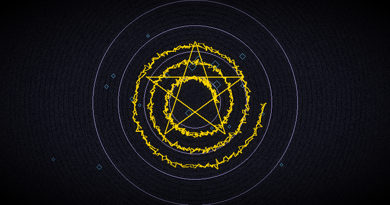

Chaos Magick for Beginners: The Complete Guide to Starting Your Practice
If you have ever felt that traditional occult systems are too rigid, too dogmatic, or too burdened with centuries of accumulated rules, you are ready for chaos magick. Chaos magick for beginners can feel overwhelming at first — there are no holy books, no fixed rituals, no single authority. But that freedom is precisely its power.
This beginner chaos magick guide will take you from absolute zero to a functioning practitioner. You will learn what chaos magick actually is, how it developed, the core techniques you need to know, and a practical week-by-week plan to build your practice. By the end, you will understand how to start chaos magick with confidence and clarity.
What Is Chaos Magick?
Chaos magick (also spelled chaos magic) is a modern occult tradition that emerged in the late 20th century. Unlike ceremonial traditions that demand strict adherence to ancient grimoires, chaos magick is radically pragmatic: it treats belief itself as a tool. Whatever works, you use. Whatever does not, you discard.
The term "chaos" does not refer to disorder or destruction. It comes from the Greek chaos — the primordial void from which all things arise. In chaos magick, this represents the infinite potential of consciousness, unconstrained by any fixed paradigm.
The History: From Spare to the IOT
Chaos magick has three foundational figures:
- Austin Osman Spare (1886-1956): The grandfather of chaos magick. Spare was a British artist and occultist who developed the modern sigil technique and the concept of gnosis. His book The Book of Pleasure (Self-Love): The Psychology of Ecstasy (1913) outlined a system of magic based on the union of conscious and subconscious will. Spare's key insight was that the critical faculty of the conscious mind blocks magical change — bypass it, and anything becomes possible.
- Peter J. Carroll (b. 1953): The systematizer. Carroll's Liber Null and Psychonaut (1978-1982) codified chaos magick into a teachable system. He introduced the concept of "belief as a tool," the distinction between inhibitory and excitatory gnosis, and the meta-principle that magic is a technology of the mind, not a matter of faith. Carroll founded the Illuminates of Thanateros (IOT), the first organized chaos magick order.
- Phil Hine (b. 1964): The populizer. Hine's Condensed Chaos (1995) made chaos magick accessible to a generation of new practitioners. His work emphasized play, creativity, and the idea that magic should be fun, not grim. Hine also connected chaos magick to postmodern theory, anarchism, and pop culture.
These three figures defined the chaos magick basics that every beginner needs to understand. Their work is the foundation upon which everything else is built.
Core Principles of Chaos Magick
Before diving into techniques, you must understand the principles that make chaos magick unique. These are not rules — they are operational guidelines derived from decades of practice.
Belief as a Tool
This is the most radical idea in chaos magick. In traditional religions and occult orders, belief is a fixed commitment. In chaos magick, belief is a tool you pick up and put down as needed. If you need to invoke a Norse god, you adopt the Norse paradigm fully for the duration of the ritual. Afterwards, you return to your normal worldview. This is not cynicism — it is a trained skill of shifting consciousness at will.
Carroll famously said: "The only true wisdom is in knowing you know nothing. Belief is a tool for achieving results, not a statement of ultimate truth."
Gnosis: The Engine of Magic
Gnosis is an altered state of consciousness in which the analytical mind is silenced. Every magical operation in chaos magick requires gnosis — without it, you are just going through motions. There are two main paths:
- Inhibitory Gnosis: Achieved through stillness, meditation, sensory deprivation, fasting, or trance states. The mind becomes quiet through the absence of input.
- Excitatory Gnosis: Achieved through intense activity that overwhelms the analytical mind: dancing, chanting, sex, physical exhaustion, or emotional extremes. The mind becomes quiet through overload.
Both paths lead to the same state. The choice depends on your personality and circumstances. We will explore how to achieve gnosis in the foundational techniques section.
Paradigm Shifting
Paradigm shifting is the practical application of "belief as a tool." You temporarily adopt a complete worldview — Greek pantheon, Norse runes, Kabbalistic sefirot, Lovecraftian mythos, or a completely personal system — and work within it as if it were absolutely real. The results are judged by their effectiveness, not by the "truth" of the paradigm.
This is why chaos magick integrates so naturally with other systems. A chaos magician can practice Goetic evocation one week, Norse rune divination the next, and Tibetan dream yoga the week after. Each paradigm is a lens, not a prison.
Personal Results as the Only Measure
Chaos magick rejects faith, authority, and tradition as valid reasons to do anything. The only question that matters is: does it work? If a technique produces consistent, measurable results in your life, keep it. If it does not, discard it. This radical empiricism makes chaos magick more like science than religion.
Keep a journal or grimoire from day one. Record every sigil, every gnosis attempt, every result. Over time, patterns emerge that reveal your personal magical fingerprint.
The 4 Foundational Techniques You Must Learn
If you want to learn chaos magick, these four techniques are your starting point. Master them before moving to advanced work.
1. Sigil Magic
Sigil magic is the entry point for most chaos magicians — and for good reason. It is simple, effective, and teaches you the core dynamic of magic: intention + gnosis = result.
The Traditional Method (Austin Osman Spare):
- Write your intent in a single sentence, present tense, as if it has already happened. Example: "I now enjoy a fulfilling and well-paying career."
- Remove all vowels and repeated letters. "I nw jy flg nd wll-p cr."
- Combine the remaining consonants into an abstract symbol. Let your hand flow freely. Do not judge the result — it is for your subconscious, not your art critique.
- Charge the sigil in a state of gnosis (see section 2). Gaze at it and project your will into it. Feel the intention burning into the symbol.
- Release and forget. Destroy the sigil (burn it, bury it, or hide it) and do not think about it again. Obsession kills the magic.
Digital tools can automate steps 1-3, but the charging and releasing remain your responsibility. The Chaos Sigil Generator app can create mathematically unique sigils using cryptographic entropy, ancient alphabets, and planetary kameas — letting you focus your energy on gnosis rather than drafting symbols by hand.
Generate Sigils with Cryptographic Precision
The Magick Chaos Sigil Generator combines 6 ancient alphabets, planetary magic squares, and cryptographic entropy. Create unique, unrepeatable sigils in seconds — 100% offline.
Get Chaos Sigil Generator — $3.99Free online version available at our sigil tool
2. Gnosis: How to Achieve Altered States
Gnosis is the engine that makes sigils work. Without it, you are drawing abstract pictures. With it, you are firing intention into the fabric of reality. Here are practical methods for achieving gnosis:
Inhibitory (Stillness) Methods:
- Fixed-gaze meditation: Stare at a candle flame or a black dot on a white wall for 10-20 minutes. When your eyes water and your mind goes blank, you are in gnosis.
- Sensory deprivation: Sit in complete darkness and silence for 20-30 minutes. Without sensory input, the mind naturally shifts into a trance state.
- Breath control: Inhale for 4 counts, hold for 4 counts, exhale for 8 counts. Repeat for 10-15 minutes. The extended exhale triggers the parasympathetic nervous system and induces a deep calm.
- Mantra repetition: Repeat a single word (or a nonsense syllable like "Aum") mentally or aloud for 10+ minutes. The repetition silences internal dialogue.
Excitatory (Overload) Methods:
- Spinning or dancing: Spin in place or dance to drumming until you are dizzy and breathless. The moment you stop, you are in a suggestible gnostic state.
- Intense exercise: Burpees, sprinting, or any activity that pushes you to physical exhaustion. The mental chatter stops when your body demands all resources.
- The "flash" method: Stare at a bright light for 10 seconds, then close your eyes. The afterimage and disorientation create a brief gnostic window. This is the principle behind the visual flash ritual used in modern digital sigil apps.
Warning: Do not drive or operate machinery after gnosis work. Always ground yourself afterward: eat something, touch physical objects, and reorient to normal awareness.
3. Divination for Feedback
Divination serves a different purpose in chaos magick than in traditional fortune-telling. It gives you feedback on your magical work. Did the sigil fire correctly? Is there resistance? What is the optimal timing?
You do not need to be a professional diviner. Learn one system well and it will serve all your needs. Popular choices among chaos magicians include:
- Runes (Elder Futhark): Each rune is a packet of symbolic meaning. Cast them for yes/no questions or spread them for deeper insight. The Norse Rune Oracle app provides instant rune readings with full interpretations.
- I Ching: The ancient Chinese oracle based on 64 hexagrams. Its binary structure appeals to the chaos magick mindset. The I Ching Oracle app guides you through traditional coin-toss or yarrow-stalk methods with modern commentary.
- Tarot: The Rider-Waite-Smith deck is the standard. Its 78 cards offer rich symbolic landscapes. The Unofficial Rider-Waite Tarot app gives you card meanings, spreads, and journaling tools.
- Zener Cards: These 5-symbol cards are used for telepathy and clairvoyance training. See our Zener cards ESP training guide for details.
Three Digital Divination Tools for Practitioners
Norse Rune Oracle — Authentic Elder Futhark readings with detailed interpretations.
I Ching Oracle — Traditional coin-toss method with modern hexagram insights.
Unofficial Rider-Waite Tarot — Full 78-card deck with guided spreads.
4. Banishing: Why It Matters
Banishing clears the magical space before and after working. It serves two purposes: it establishes a protected container for your operation, and it signals to your subconscious that the ritual has ended.
The simplest chaos magick banishing requires no tools, no circle, and no elaborate words:
- Close your eyes and visualize a sphere of white light around your body.
- See it expand to fill the room, pushing out any stagnant or unwanted energy.
- State aloud: "This space is clear. Only my intention remains."
- Snap your fingers or clap your hands once to seal the banishing.
More elaborate banishing rituals exist (the Lesser Banishing Ritual of the Pentagram, the Gnostic Banishing Ritual), but this minimalist version is sufficient for all beginner work. The key is consistency — do it the same way every time, and your subconscious will learn the trigger.
Tools vs. No Tools: You Already Have Everything You Need
One of the most liberating aspects of chaos magick basics is that you need nothing external. A pen and paper are enough. Your mind is the only real tool. However, digital tools can accelerate your learning and make practice more convenient:
- Sigil creation: Apps save hours of drafting and ensure mathematical precision.
- Divination: Digital oracles provide instant readings when you cannot use physical cards or runes.
- Dream tracking: Dream journals and alarm apps help train lucid dreaming for advanced gnosis work.
- Grimoire management: Digital records are searchable, secure, and always accessible.
The bottom line: start with pen and paper. Add digital tools as your practice grows. Never let the tool become the focus — you are the source of the magic.
Digital Tools from Cha0smagick Labs
All Cha0smagick Labs apps are designed to support your chaos magick journey. They are 100% offline, ad-free, tracking-free, and available as a one-time purchase. Here is how each one fits:
- Chaos Sigil Generator: Create cryptographic sigils using 6 ancient alphabets, planetary kameas, and a built-in flash ritual for gnosis charging.
- Norse Rune Oracle: Full Elder Futhark divination with interpretations for every spread.
- I Ching Oracle: Classical Chinese divination with modern chaos-friendly commentary.
- Unofficial Rider-Waite Tarot: Complete 78-card deck with Celtic Cross and other spreads.
- Dream Machine: A full-featured dream journal with reality checks, wake alarms, and dream sign analysis for lucid dream training.
- Arcana Goetia: Complete Lemegeton guide with all 72 spirit sigils, rankings, and invocation frameworks.
- Lunar Phase Calculator: Track moon phases for timing your magic. Each phase has specific correspondences for different types of work.
- Psi Gym: ESP training app with Zener cards, telemetry tests, and statistical tracking to measure your psi abilities.
Explore All Cha0smagick Labs Apps
Every app is designed for the modern chaos magician: offline, private, and focused on results. No subscriptions. No ads. No tracking.
View All Apps →Suggested Learning Path: 8 Weeks to Competent Practice
This chaos magic tutorial schedule builds skills progressively. Do not rush. Master each week before moving to the next.
Week 1: Foundation
- Read Condensed Chaos by Phil Hine (or this guide as your starting point)
- Practice fixed-gaze meditation for 10 minutes daily
- Write a definition of chaos magick in your own words
- Create a simple grimoire (physical notebook or digital)
Week 2: Sigil Basics
- Create one sigil per day for 7 days using Spare's method
- Charge each sigil using fixed-gaze gnosis
- Record each sigil, its intention, and your gnosis method in your grimoire
- Experiment with the free online sigil generator
Week 3: Gnosis Exploration
- Try three different gnosis methods (one inhibitory, one excitatory, one of your choice)
- Charge the same intention using each method and compare results
- Note which method works best for you personally
Week 4: Divination Introduction
- Choose one divination system (runes, I Ching, or tarot)
- Practice one reading daily for 7 days
- Ask specific questions about your magical work and mundane life
- Try the free online rune tool or I Ching tool
Week 5: Banishing and Grounding
- Practice the minimalist banishing before and after every working
- Develop a grounding routine (eat, touch earth, cold water on face)
- Observe how banishing changes the quality of your practice
Week 6: Paradigm Shifting
- Choose a paradigm you know nothing about (e.g., Egyptian, Norse, Celtic)
- Spend one week studying and practicing exclusively within that paradigm
- At the end of the week, write a reflection on what you learned
Week 7: Dream Work
- Start a dream journal (use Dream Machine for digital tracking)
- Set an intention before sleep to remember your dreams
- Practice reality checks throughout the day (lucid dreaming prep)
Week 8: Integration and Self-Assessment
- Review your grimoire from all 7 weeks
- Identify which techniques produced the strongest results
- Create a personalized practice schedule going forward
- Share your experience with the community (forums, social media, or with a practice partner)
Common Beginner Mistakes
Every beginner makes these mistakes. Recognizing them early will save you months of frustration.
- Obsessing over results: You fire a sigil, then check every hour to see if it worked. This keeps the intention in your conscious mind and blocks the subconscious from doing its work. Fire and forget. Trust the process.
- Skipping the grimoire: "I will remember what I did." No, you will not. Write everything down. Patterns emerge over months, not days, and only if you have records.
- Ignoring grounding: Magical work without grounding leaves you spacey, unfocused, and vulnerable to obsession. Grounding is not optional — it is part of the operation.
- Taking it too seriously: Chaos magick should include an element of play. Carroll said it best: "Magic is the art of causing change in accordance with will while having fun." If you are grim and joyless, you are doing it wrong.
- Collecting tools instead of practicing: It is easy to buy candles, crystals, and apps. It is hard to sit in silence and actually do the work. Avoid tool-collecting as a substitute for practice.
- Overcomplicating sigils: A sigil can be a simple combination of a few lines. It does not need to be artistically beautiful. Its only job is to encode intention for your subconscious.
Chaos Magick and Other Traditions
Chaos magick integrates naturally with many other systems. Here are some of the most common intersections:
- Goetic Magic: Chaos magicians often treat Goetic spirits as servitors. The structure of Solomonic evocation combined with chaos-style paradigm shifting is a powerful hybrid approach.
- Norse Runes: The Elder Futhark is a complete symbolic system perfect for paradigm shifting. Each rune becomes a lens for understanding reality.
- Lucid Dreaming: Dream states are natural gnosis. Lucid dreaming gives you access to a reality where your will is the only law — the ultimate chaos magick playground.
- Lunar Phase Magic: Moon phases provide a natural timing system for magical work. New moon for beginnings, full moon for manifestation, waning moon for banishing.
- Rider-Waite Tarot: Tarot is both a divination system and a symbolic training ground. The 78 cards map the entire spectrum of human experience — and the chaos magician learns to navigate them all.
Recommended Reading
These books form the core library of chaos magick. Read them in this order for maximum benefit:
- Spare, A.O. (1913). The Book of Pleasure (Self-Love): The Psychology of Ecstasy. The original source of sigil magic and gnosis theory.
- Carroll, P.J. (1978). Liber Null & Psychonaut. The definitive textbook of chaos magick. Covers everything from sigils to astral projection.
- Carroll, P.J. (1992). Liber Kaos. Advanced theory including chaos magick's relationship to science, mathematics, and information theory.
- Hine, P. (1995). Condensed Chaos: An Introduction to Chaos Magick. The most accessible beginner's book. Read this first if the other texts feel too dense.
- Hine, P. (2001). Prime Chaos: Adventures in Chaos Magick. Deeper explorations and practical applications.
- Sherwin, R. (2015). "The physics of chaos magick: Entropy, information and sigilization." Chaos International, 25, 4-18. A modern theoretical framework connecting chaos magick to information science.
- Wilson, R.A. (1977). Prometheus Rising. While not strictly a chaos magick book, Wilson's exploration of reality-tunnels, imprinting, and consciousness is essential reading for anyone serious about paradigm shifting.
- Krauss, J. (2020). The Book of Chaos Sigils. A practical workbook focused exclusively on sigil design, charging, and tracking results.
Final Thoughts: Your First Step
How to start chaos magick is simple: do something. Not tomorrow, not after you have read one more book, not after you have bought the perfect app. Right now. Write an intention, make a sigil, sit in silence for ten minutes, and fire it into the void.
The universe does not care about your credentials, your tradition, or your tools. It responds to focused will. Chaos magick strips away every excuse and leaves you face to face with the only thing that matters: your own power as a creator of reality.
The path is yours to walk. This guide has given you the map. The first step is up to you.
Ready to Deepen Your Practice?
Download the Chaos Sigil Generator and start creating your first cryptographic sigil in under 60 seconds. No tools, no subscriptions, no tracking — just pure chaos magick technology.
Get the Chaos Sigil Generator — $3.99References
- Carroll, P.J. (1978). Liber Null & Psychonaut. Weiser Books.
- Carroll, P.J. (1992). Liber Kaos. Weiser Books.
- Hine, P. (1995). Condensed Chaos: An Introduction to Chaos Magick. New Falcon Publications.
- Hine, P. (2001). Prime Chaos: Adventures in Chaos Magick. New Falcon Publications.
- Spare, A.O. (1913). The Book of Pleasure (Self-Love): The Psychology of Ecstasy. London.
- Wilson, R.A. (1977). Prometheus Rising. New Falcon Publications.
- Krauss, J. (2020). The Book of Chaos Sigils. Independently published.
- Sherwin, R. (2015). "The physics of chaos magick: Entropy, information and sigilization." Chaos International, 25, 4-18.